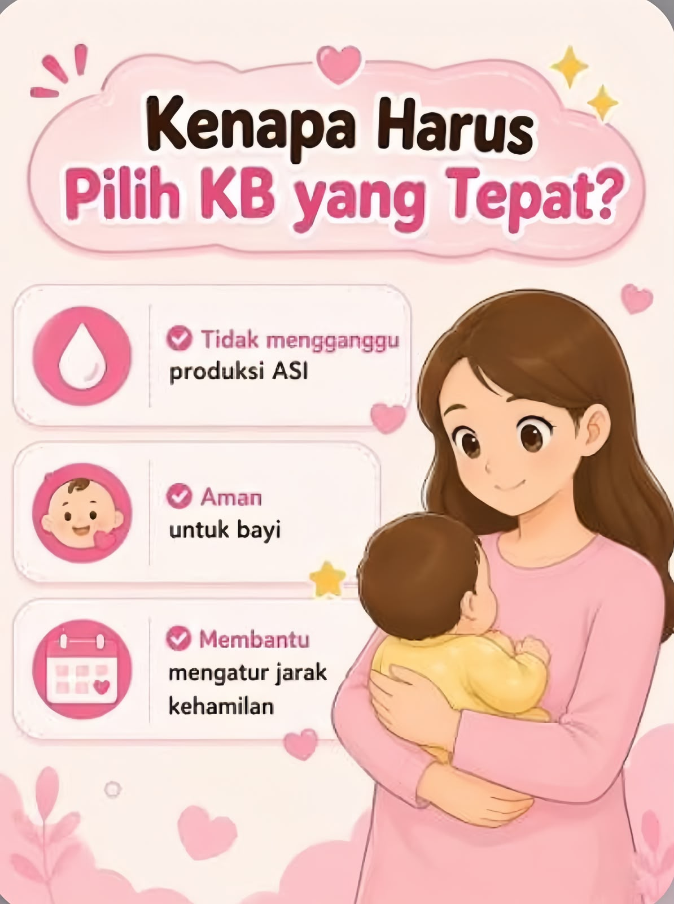
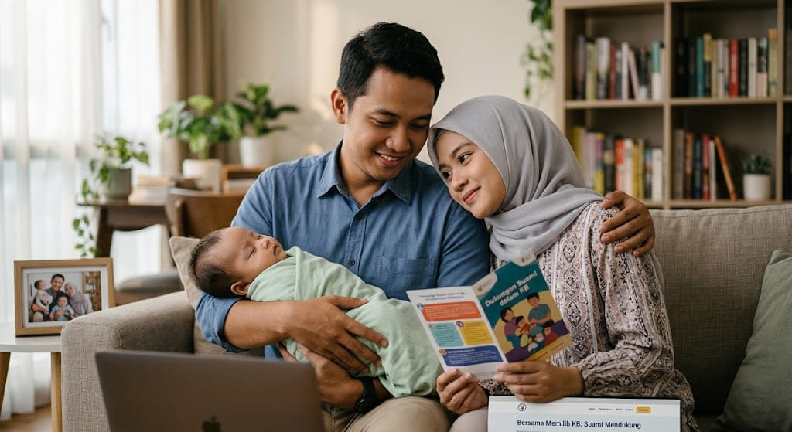

📖
Informasi Mudah
Pelajari informasi KB dengan bahasa sederhana.

Setiap pilihan hari ini adalah langkah kecil
menuju masa depan keluarga yang lebih bahagia.
E-KB PASCA SALIN membantu Bunda mengenal pilihan KB setelah melahirkan, termasuk manfaat dan efek sampingnya.
Pelajari informasi KB dengan bahasa sederhana.
Kenali jenis, manfaat, dan efek samping KB.
Siapkan pertanyaan untuk didiskusikan bersama bidan.
Pilih “Lihat Penjelasan” untuk mengenal metode, manfaat, efek samping, dan hal yang perlu dipertimbangkan.
Ibu menyusui tetap dapat mempertimbangkan kontrasepsi. Jenis dan waktu memulai KB perlu disesuaikan dengan usia bayi, kondisi ibu, serta hasil konsultasi.
Beberapa metode memiliki aturan waktu penggunaan setelah persalinan. Beri tahu bidan bahwa Bunda sedang menyusui agar dapat memperoleh informasi yang sesuai.
Bersama, Bunda lebih percaya diri
Setelah melahirkan, Bunda mungkin merasa bingung atau ragu saat memilih KB. Tenang ya, Bun. Perasaan itu wajar. Bunda tidak harus menjalani semuanya sendirian.
Suami dapat mendengarkan kekhawatiran Bunda dan menemani mencari informasi tentang pilihan KB. Dukungan sederhana dapat membuat Bunda merasa lebih tenang dan dihargai.
Bunda dan suami dapat berdiskusi tentang pilihan KB. Jika masih ragu, berkonsultasilah dengan bidan agar Bunda memahami pilihan yang sesuai dengan kebutuhan.
Keputusan KB tetap milik Bunda, dengan dukungan orang tersayang. 💗

Memberi ruang bagi Bunda untuk bercerita tentang harapan dan kekhawatirannya.
Membaca informasi manfaat dan kemungkinan efek samping KB bersama.
Membantu Bunda menyiapkan pertanyaan untuk bidan atau dokter.
Menghargai keputusan Bunda tanpa tekanan atau paksaan.
Membantu merawat bayi dan pekerjaan rumah agar Bunda bisa beristirahat.
Membicarakan perencanaan keluarga bersama dengan saling menghargai.
Tandai hal yang penting bagi Bunda. Catatan ini dapat dibawa saat konsultasi dan tidak menentukan metode KB secara otomatis.
Bantu kami mengetahui apakah website ini mudah dipahami dan bermanfaat. Pilih jawaban sesuai pengalaman Bunda.